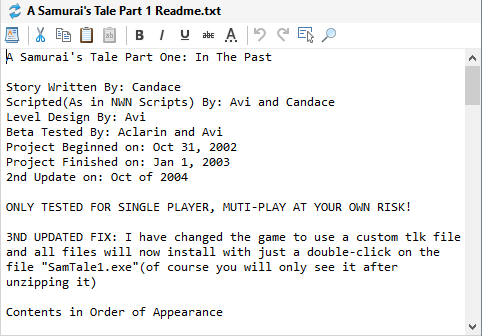
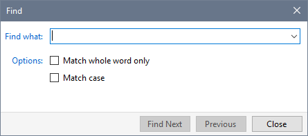
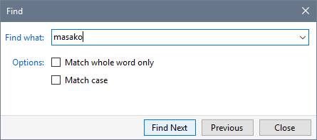
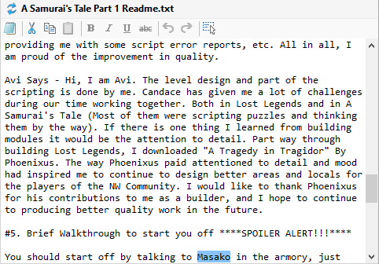
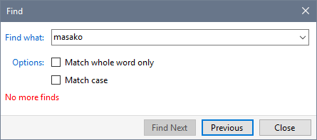

You can locate text within the contents of files shown in the Details or Properties panels.
- Select the text file you want to search and click in the text display area.

- Press the Find button, Ctrl+F or click Find from the Edit menu.

- Type in the text you want to locate and click Find Next.

- The first occurrence of the text you specified is highlighted in the file's contents.

- The next occurrence of the text is highlighted each time you click Find Next. The dialogue indicates when there are no more occurrences.

- You can click Previous to search in the reverse direction.
Related Topics
Find files in your Profile
Find files in Contents or Details
Find text within a file
Find and rename Mods